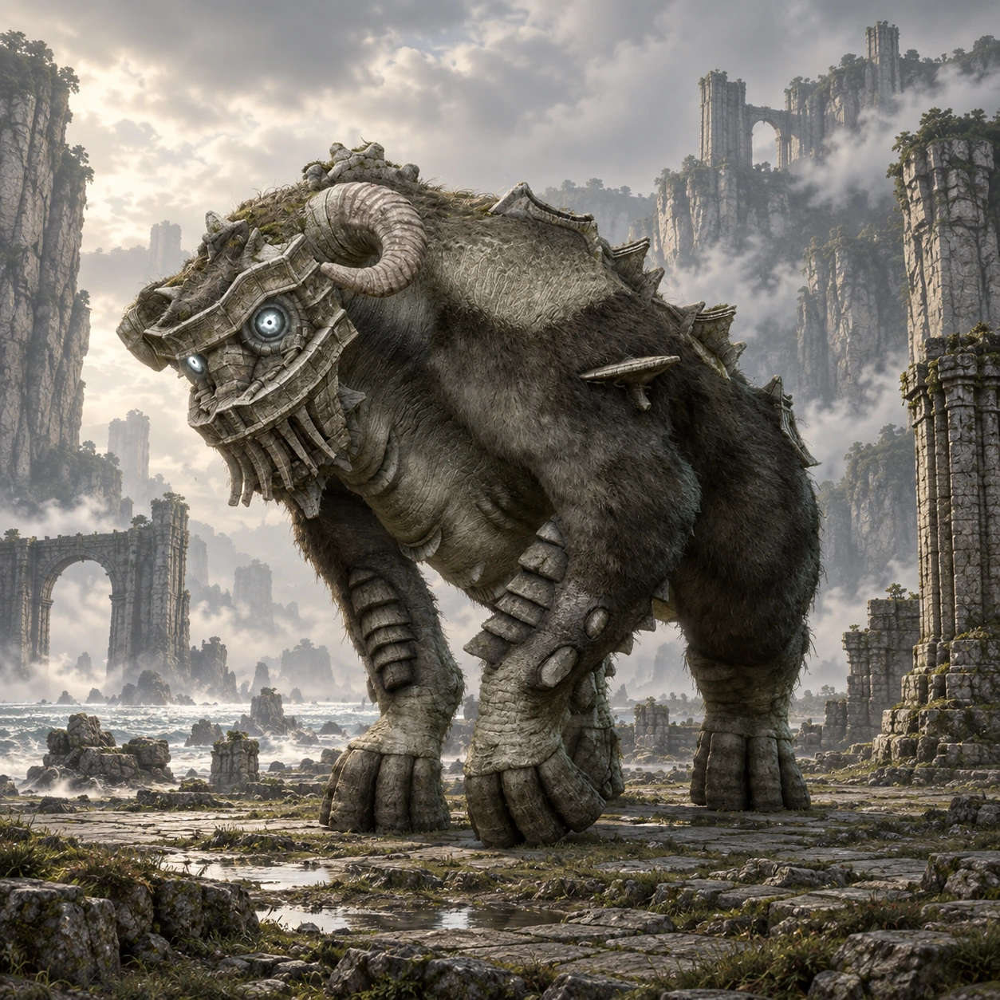

Dois nomes, duas origens
“Mammoth” é um nome de desenvolvimento. “Quadratus” é o nome popular entre os fãs, não um nome próprio apresentado durante o jogo.

Colosso 02 · Terras Proibidas
Passos que fazem a margem estremecer.
Entre a areia e os paredões, uma silhueta de quatro patas ocupa a praia. Quadratus transforma a paisagem aberta em um encontro de peso e paciência.
Conheça o gigante01 / O gigante
O corpo largo, os chifres curvados e as patas maciças lembram um enorme bovino. Placas de pedra acompanham o dorso, contrastando com a pelagem que cobre parte do corpo.
Visto da margem, seu volume parece se confundir com as rochas. O passo lento reforça essa impressão, até que o gigante ergue as patas e revela a força por trás de cada movimento.
*Altura e comprimento seguem as estimativas da Colossipédia, citada nas fontes. Os valores variam entre fontes e escalas; são referências aproximadas, não medidas oficiais confirmadas.
02 / O caminho
Siga para o norte do Santuário da Adoração e atravesse a ponte natural de pedra. Do outro lado, procure a descida que leva até a margem de areia.
Continue junto aos paredões até a grande abertura selada na rocha. A praia fica abaixo do caminho principal; Agro pode acompanhar Wander nessa área.
Abrir mapa das Terras Proibidas03 / Um olhar mais atento
“Mammoth” é um nome de desenvolvimento. “Quadratus” é o nome popular entre os fãs, não um nome próprio apresentado durante o jogo.
Quadratus rompe a barreira de pedra que fecha sua caverna. A chegada do gigante também transforma o cenário.
É o primeiro quadrúpede da jornada. O dorso comprido muda a percepção de distância em relação à escalada vertical de Valus.
04 / O encontro
Algumas pistas para começar, deixando a descoberta da luta com você.
Dicas gerais para o modo Normal. A ficha não detalha todos os pontos vitais nem o desfecho do confronto.
Ficha baseada em registros da comunidade e guias de jogo. A arte é uma interpretação visual, não uma captura do jogo.